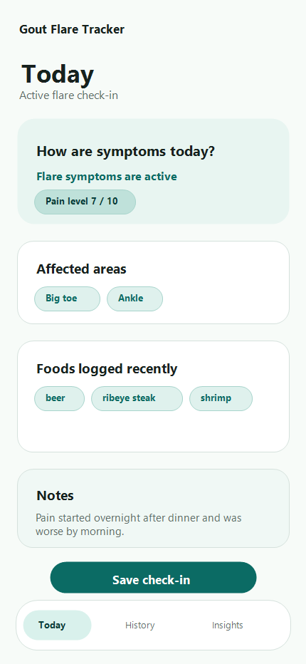
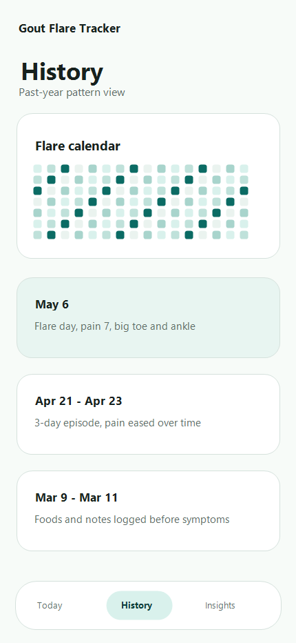
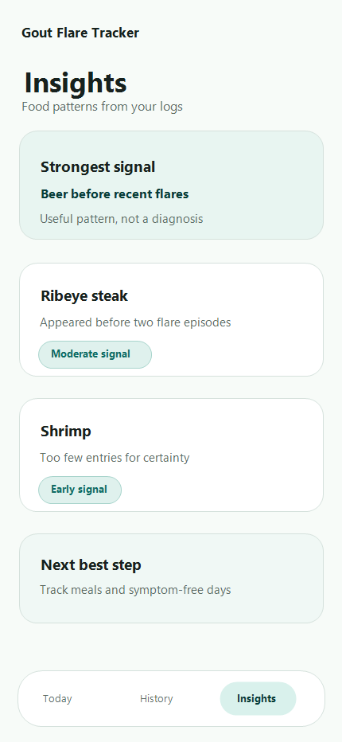

What is happening today?
Log whether you have symptoms, capture pain level, note body location, and tag foods without turning the process into homework.
Gout Flare Tracker
A calm, focused tracker for logging symptoms, reviewing flare history, and surfacing likely food patterns from your own data.
Designed for clarity
The app uses a soft clinical palette, flare-aware states, and plain language so the product feels steady when symptoms are not.
Why it works
Log whether you have symptoms, capture pain level, note body location, and tag foods without turning the process into homework.
Review a full-year history heatmap and scan flare episodes, symptom-free days, and notes in one place.
See early patterns and stronger signals from your entries, with cautious copy that avoids overstating certainty.
Actual app screens
Today
The main workflow keeps symptom logging front and center, then expands into pain, body part, food, and notes only when needed.

History
The history view uses a compact heatmap and clear daily cards so changes over time are easy to read without feeling clinical.

Insights
Insights explain what appeared before flare episodes, how strong the pattern looks, and what that signal actually means in plain language.

Product tone
The app does not diagnose. It helps people build a record they can use for their own decisions and for better conversations with a clinician.